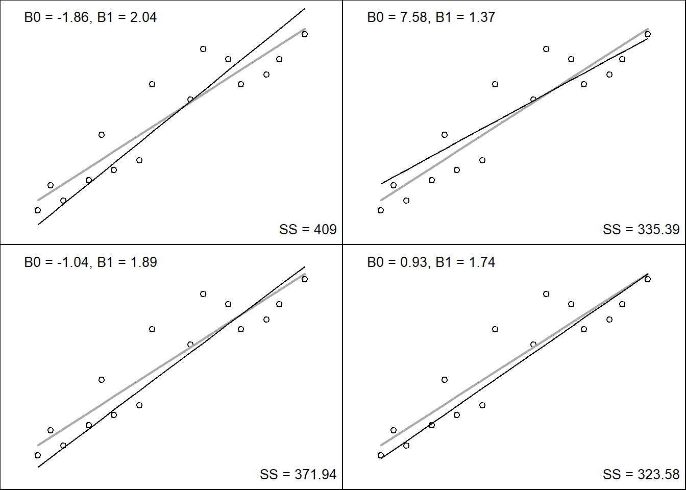
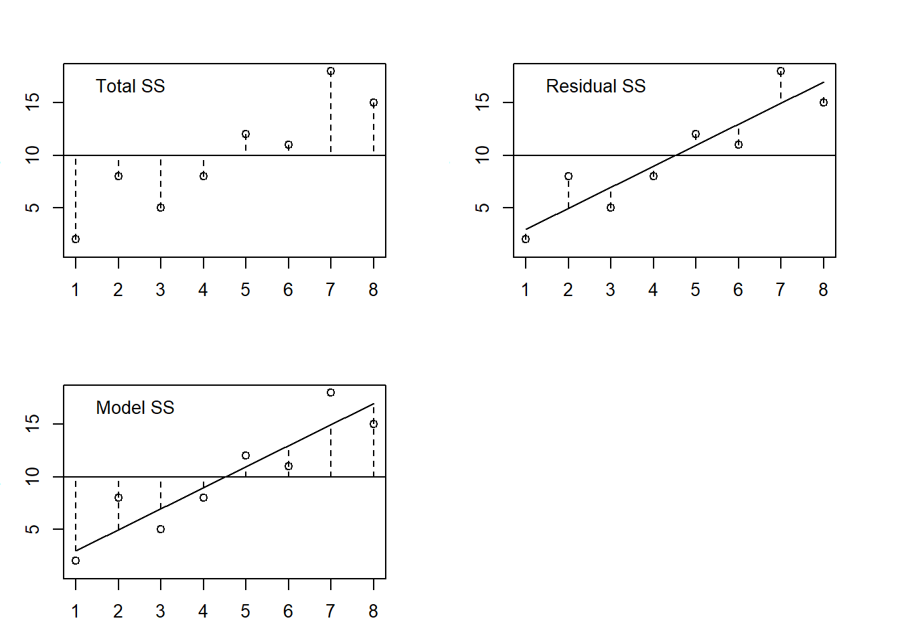
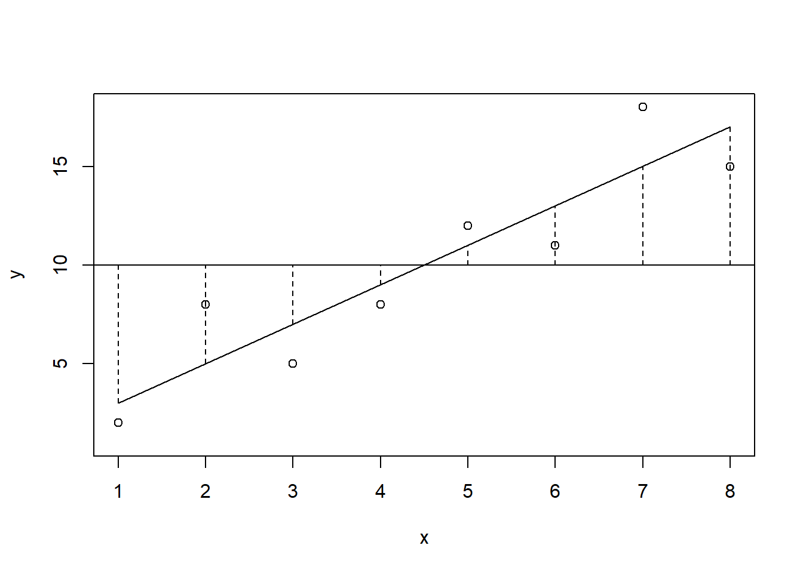
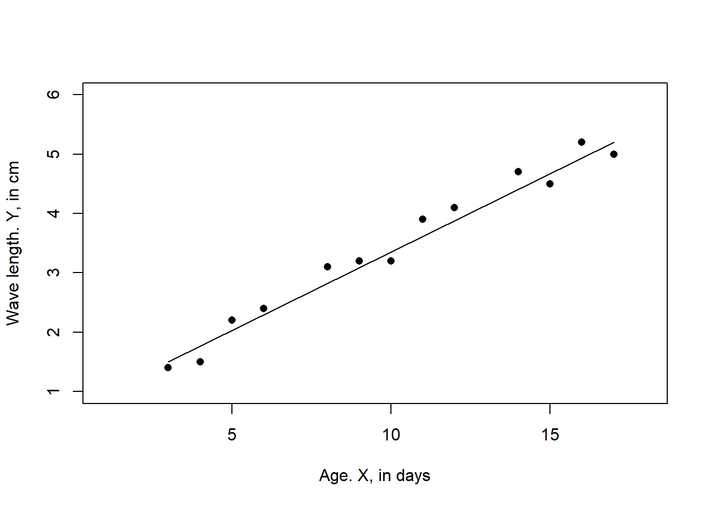
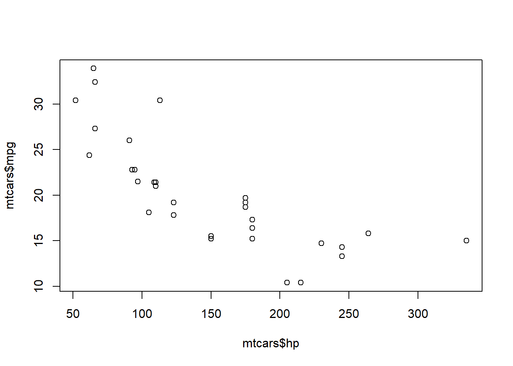

17 Linear Regression
Analysis with a one independent (X) and dependent variable (Y) is termed “Simple” linear regression.
17.1 What is Regression?
A way of predicting the value of one variable from another.
It is a model of the relationship between two variables.
The modeled relationship is linear.
Therefore, we describe the relationship using the equation for a straight line.
To do the fitting and the hypothesis testing, we will evaluate the following quantities:
- Total sum of squares (TSS or \(SS_T\))
- Model sum of squares (Regression SS, \(SS_M\))
- Residual sum of squares (RSS or \(SS_R\))
We will use these quantities to understand two things:
Is \(\beta_1 = 0\) (using the confidence intervals)? We would like to know if X is a good predictor of Y and this is determined by evaluating the null hypothesis, \(\beta_1 = 0\).
Is the model significant (using an F-test)? Specifically does the fit of model fit the data better than does the null model (more on this below).
17.2 Assumptions of Simple Linear Regression
For each value of X, Y are randomly sampled and independent.
For any value of X in the population there exists a normal distribution of Y values
There is homogeneity of variance in the population. i.e. the variance of the normal distribution of Y values in population are equal for all of values of X.
X is measured without error
The exptected value of Y at the \(i^{th}\) value of X is \(E(Y_i)=\beta_0 + \beta_1X_i\)
17.3 Model for Linear Relationship is a two-parameter model
The first parameter is \(\beta_1\)
Gradient (slope) of the regression line.
This indicates the direction of the relationship.
The second parameter is \(\beta_0\)
Intercept (value of Y when X = 0).
Location where the regression line crosses the Y-axis (ordinate).
17.5 The Method of Least Squares
This is the approach we will use for parameter estimation and inference in this course.
This figure shows a scatterplot of some data with a line representing the best fit model.
x <- c(2,3,4,6,7,8,10,11,14,15,17,18,20,21,23)
y <- c(5,10,7,11,20,13,15,30,27,37,35,30,32,35,40)
plot(x, y,
xlim = c(0,25), ylim = c(0,45),
pch = 1, xlab = "Size of Spider",
ylab = "Anxiety")
segments(x0 = 0, y0 = 3, x1 = 23, y1 = 41)This figure shows the residual (observed - expected) value of the best fit model.
Our task is to minimize the \(SS\) value.
Let’s look at a some cases for alternative candidate model parameters:
Our task is to minimize the \(SS\) value.

17.6 Sum of Squares Components
Once the best fit model is derived, we can make inference about the quality of the model (relative to the null model) and the hypothesis \(\beta_1 = 0\).
Let’s take a close look at the three sum of squares components.

17.7 Total SS (SST, SST)
Total variability (variability between scores and the mean) in the observations.
TSS is the sum of the squared residuals when the most basic model is applied to the data.
How good is the mean as a model to the observed data?
Lets consider the mean of Y to be the null model:
SST uses the differences between the observed data and the mean value of Y (the null model)
\(TSS =\sum(Y_i - \bar{Y})^2\)
17.8 Residual SS or Error SS (SSR)
SSR is the error that is derived between the regression model and the actual data).
Difference between the observation and the model
Represents the degree of inaccuracy when fitting the model to the data.
Residual/error variability (variability between the regression model and the actual data).
\(RSS =\sum(Y_i - \hat{Y})^2\)
17.9 Model SS or Regression SS (SSM)
SSM is the difference between the prediction from the regression model and the mean (null model).
This is the improvement we get from fitting the model to the data relative to the null model.
\(SS_M=\sum(\hat{Y}_i - \bar{Y})^2\)

17.11 Variance Ratio Test
We will evalute the model using an F test - “termed variance ratio test”.
We will be evaluating the ratio of SSM and SSR.
We will use the SSM and SSR to calculate quantities “mean squares”
This will be done by dividing the SSM and SSR by their respective degrees of freedom (df). These terms can be expressed as averages, divided by df terms.
df for SSM (The number of parameters in the model - 1)
df for SSR (number of obs - number of parameters in the model)
These quantities are called mean squares.
- Mean Squares Model; MSM = SSM/dfM
- Mean Squares Residual: MSR = SSR/dfR
F-test is termed the “variance ratio test”
\(F=\frac{MS_M}{MS_R}\)
17.12 Test \(\beta_1 = 0\)
To test whether \(\beta_1 = 0\) we will use the t-distribution.
After determining the model parameters values we can estimate the standard error of the slope paramter.
The approach is to determine the confidence interval of the slope (\(\beta_1\)) for a given value of \(\alpha\).
Look at the following equation, what values will we need?
\(SE_{\beta_1}=\frac {\sqrt{\frac{(\sum{{Y_i - \hat{Y_i}}})^2}{df}}}{\sqrt{\sum{(X_i - \bar{X})^2}}}\)
\(SE_{\beta_1}=\frac {\sqrt{\frac{(\sum{{Y_i - \hat{Y_i}}})^2}{(n - 2)}}}{\sqrt{\sum{(X_i - \bar{X})^2}}}\)
Degrees of freedom: For simple linear regression (one independent and one dependent variable), the degrees of freedom (df) is equal to, n - 2.
Our calculated test statistic is:
\(t = \frac{\beta_1}{SE_{\beta_1}}\)
We will compare this to the critical value:
\(t_{\alpha, 2-tailed, df}\)
17.13 Worked Example
| Age (days) (X) | Wing Length (cm) (Y) |
|---|---|
| 3.0 | 1.4 |
| 4.0 | 1.5 |
| 5.0 | 2.2 |
| 6.0 | 2.4 |
| 8.0 | 3.1 |
| 9.0 | 3.2 |
| 10.0 | 3.2 |
| 11.0 | 3.9 |
| 12.0 | 4.1 |
| 14.0 | 4.7 |
| 15.0 | 4.5 |
| 16.0 | 5.2 |
| 17.0 | 5.0 |

We find that the TSS is = 19.65
We find that the Model SS = 19.13
| Source of Variation | Sum of Squares (SS) | df | Mean Squares (MS) |
|---|---|---|---|
| Total | \(\sum(Y_i-\bar{Y})^2\) | ||
| Model (or Regression) | \(\sum(\hat{Y}_i-\bar{Y})^2\) | The number of parameters in the model - 1 | SSM/dfM |
| Residual (or Error) | \(\sum(Y_i-\hat{Y_i})^2\) | The number of obs - the number of parameters in the model | SSR/dfR |
17.13.1 Summary of the Calculations for Model Fit
We are falsifying the null hypothesis: \(H_0\): There is no statistically significant relationship between variables x and y.
| Source of Variance | SS | df | MS |
|---|---|---|---|
| Total | 19.65 | 12 | |
| Model (or Regression) | 19.13 | 1 | 19.13 |
| Residual (or Error) | 0.52 | 11 | 0.047 |
\(F=\frac{19.132214}{0.047701}=401.1\)
\(F_{0.05(1),1.11} = 4.84\)
Therefore, reject H0
P < 0.0005
17.14 Regression: An Example
A record company executive is interested in predicting record sales from advertising.
Data are:
- 200 different album releases
Outcome variable:
- Sales (CDs and downloads) in the week after release
Predictor variable:
- The amount (in units of $1,000) spent promoting the record before release.
17.15 Output of a Simple Regression
In R:
| Coefficients: | Estimate | Std. Error | t value | Pr(> |
|---|---|---|---|---|
| (intercept) | 134 | 7.53 | 17.799 | < \(2\times10^{-16}\) *** |
| Adverts | 0.096 | 0.00963 | 9.979 | < \(2\times10^{-16}\) *** |
- Signif. codes: 0 ‘’ 0.001 ’’ 0.01 ’’ 0.05 ‘.’ 0.1 ’ ’ 1
- Residual standard error: 65.99 on 198 degrees of freedom
- Multiple R-squared: 0.3346, Adjusted R-squared: 0.3313
- F-statistic: 99.59 on 1 and 198 df, p-value: < 2.2e-16
17.16 Using the Model
Expected Record Salesi = 134.14 + (0.096 x Advertising Budgeti)
E(Record sales if Budget = 100) = 134.14 + (0.096 x 100)
E(Record sales if Budget = 100) = 143.75
17.17 Analysis of the slope coeffient
Using the fact that \(\beta_1\) is approximately normally distributed in large samples, we can test the hypothesis that \(\beta_1 = 0\).
From our reading, we learned that the calculated value of the t-statistic is:
\(t = \frac{\beta_{observed} - {\beta_{expected}}}{{SE_{\beta}}}\).
For the hypothesis testing, we:
- Compute the standard error of \(\beta_1\), \(SE_{\beta_1}\):
\(SE_{\beta_1}=\frac {\sqrt{\frac{\sum{{Y_i - \hat{Y_i}}})^2}{{n - 2}}}}{\sqrt{\sum{(X_i - \bar{X})^2}}}\)
- Compute the t-statistic, in this case, we are comparing our observed value of \(\beta_1\) to the expected value, if the null hypothesis is true. So, our expected value is \(\beta_1 = 0\). And we divide this difference by \(SE_{\beta_1}\).
\(t = \frac{\hat{\beta_1} - 0}{SE_{\beta_1}}\).
\(t = \frac{\hat{\beta_1}}{SE_{\beta_1}}\).
This is our computed t value.
We calculate the critical value of t, which is derived using the degrees of freedom. For simple linear regression (one independent and one dependent variable), the degrees of freedom (df) is equal to, n - 2.
To determine the 95% CI of \(\beta_1\), we can rearrange the above equation:
\(t = \frac{\hat{\beta_1} - 0}{SE_{\beta_1}}\).
\(t SE_{\beta_1} = \hat{\beta_1}\).
\(\hat{\beta_1} = t_{\alpha, df} SE_{\beta_1}\).
If \(\alpha = 0.05\), then we would get the 95% confidence interval of \(\beta_1\).
17.18 An R example

## Estimate Std. Error t value Pr(>|t|)
## (Intercept) 30.09886054 1.6339210 18.421246 6.642736e-18
## mtcars$hp -0.06822828 0.0101193 -6.742389 1.787835e-07The second column of the coefficients’ summary, reports \(SE_{\beta_1}\) and \(SE_{\beta_0}\).
In the third column t value, we find the t statistics suitable for tests of the separate hypotheses:
\(\beta_o = 0\) and
\(\beta_1 = 0\).
Furthermore, the output provides us with p-values corresponding to both tests against the two-sided hypothesis in the fourth column of the table.
Given these results:
\(\beta_1 = -0.06822828\)
\(SE_{\beta_1} = 0.0101193\)
\(t = \frac{\hat{\beta_1} - 0}{SE_{\beta_1}}\)
\(t = \frac{ -0.068}{0.0101}\).
\(t = -6.742\).
95% CI of \(\beta_1\):
\(t_{\alpha=0.05, df = (n - k -1)}\)
\(t_{\alpha=0.05, df = (32 - 2 -1)}\)
\(t_{\alpha=0.05, df = (29)}\)
\(t_{\alpha=0.05, df = (29)} = -1.699\)
95% CI of \(\beta_1\) = \(t_{\alpha=0.05, df = 29}SE_{\beta_1}\) }
\(\beta_1 = -0.068 \pm 0.017\)
17.19 Prediction and confidence intervals
Sometimes (often) we will want to use the model to predict values.
For example, suppose we fit a simple linear regression model using hours studied as a predictor variable and exam score as the response variable. Using this model, we might predict that a student who studies for 6 hours will receive an exam score of 91.
However, because there is uncertainty around this prediction, we might create a prediction interval that says there is a 95% chance that a student who studies for 6 hours will receive an exam score between 85 and 97.
This range of values is known as a 95% prediction interval and it’s often more useful to us than just knowing the predicted value. The predicted value \(\hat{Y_i}\) is called a point and is useful. We would like to report the variability around this value..
Two type of intervals available:
1.) Confidence interval
A confidence interval captures the uncertainty around the mean predicted values.
2.) Prediction interval
The prediction interval predicts in what range a future individual observation will fall. A prediction interval will always be wider than a confidence interval for the same value.
Confidence interval:
\(\hat{y} = s_yt_{(\alpha, df = n-2)}\sqrt{\frac{1}{n}+\frac{(X^*-\bar{X})^2}{(n-1)s^2_X}}\)
Here, \(s_y= \sqrt{\frac{\sum(y_i-\hat{y_i})^2}{n-2}}\)
\(s_y\) is called residual standard error in R regression output.
Prediction intervals are similar in their calculation
\(\hat{y} = s_yt_{(\alpha, df = n-2)}\sqrt{1+\frac{1}{n}+\frac{(X^*-\bar{X})^2}{(n-1)s^2_X}}\)
Here, \(s_y= \sqrt{\frac{\sum(y_i-\hat{y_i})^2}{n-2}}\)
The formula is very similar, except the variability is higher since there is an added 1 in the formula.
17.20 An R example - Confidence Intervals
data(mtcars)
mt <- mtcars[order(mtcars$hp),]
plot(mt$mpg ~ mt$hp)
model. <- lm(mt$mpg ~ mt$hp)
new_hp <- data.frame(hp = mt$hp)
pred.vals <- predict(model., newdata = new_hp, interval = "confidence")
lines(cbind(new_hp, pred.vals)[,c(1,2)])
lines(cbind(new_hp, pred.vals)[,c(1,3)], col = "red")
lines(cbind(new_hp, pred.vals)[,c(1,4)], col = "red")17.21 An R example - Prediction Intervals
data(mtcars)
mt <- mtcars[order(mtcars$hp),]
plot(mt$mpg ~ mt$hp)
model. <- lm(mt$mpg ~ mt$hp)
new_hp <- data.frame(hp = mt$hp)
pred.vals <- predict(model., newdata = new_hp, interval = "prediction")
lines(cbind(new_hp, pred.vals)[,c(1,2)])
lines(cbind(new_hp, pred.vals)[,c(1,3)], col = "red")
lines(cbind(new_hp, pred.vals)[,c(1,4)], col = "red")